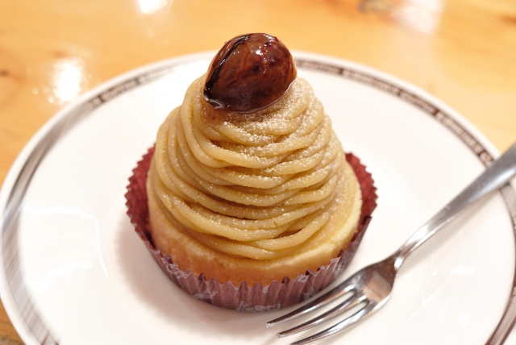

秋限定メニュー。茨城県・笠間栗のモンブラン。
茨城県は全国1位の栗の産地。その中でも笠間市は代表的な栗の産地として知られていて、大粒で甘みがあり香りもいいと...
横浜みなとみらいの大桟橋にある「Bayside Cafe」。ガラス張りの店内からは横浜の海と港が一望できます。
仕事の合間や休日のひとときに、海を眺めながらゆっくりとした時間を過ごしてほしい。
Bayside Cafeはそんな想いからできました。
当店では、特に厳しい基準をクリアした世界最高品質のスペシャリティーコーヒーの香り、甘さ、深さを、職人独自の焙煎技術で、最高な状態に引き出した豆をご提供しています。
住所：神奈川県横浜市中区海岸通り1-1-4
TEL：045-000-0000
営業時間：11:00～20:00
定休日：火曜日
アクセス：みなとみらい線「日本大通り駅」より徒歩10分
ご予約はこちらから
TEL：045-000-0000